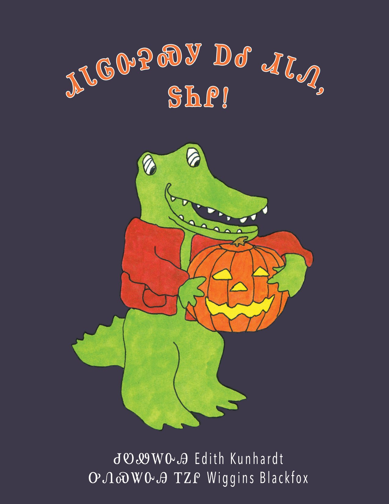
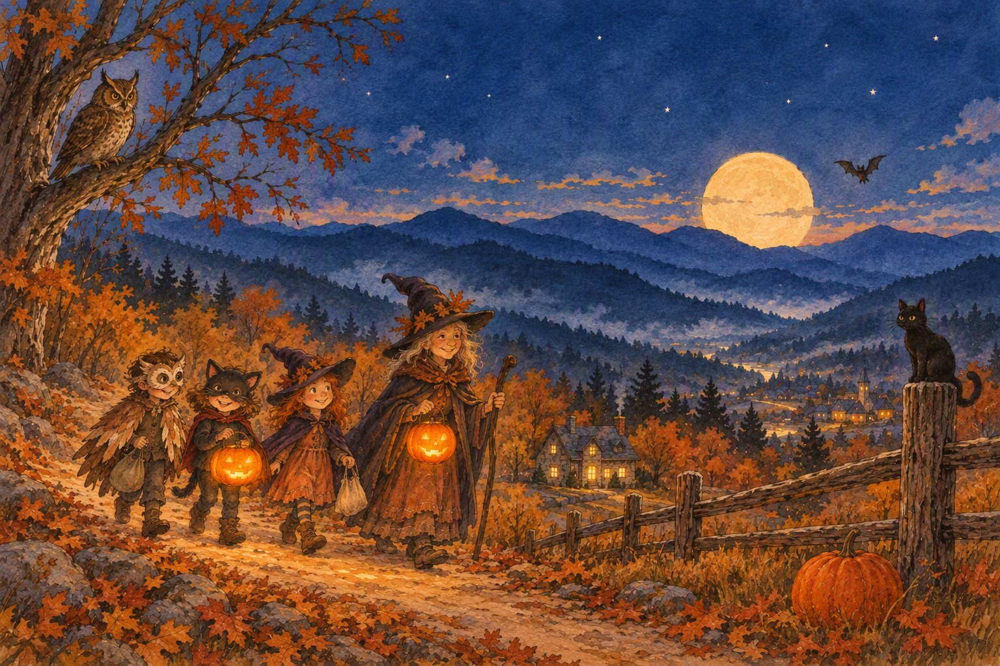

<!doctype html>
<html lang="en">
<meta charset="utf-8">
<meta name="viewport" content="width=device-width, initial-scale=1">
<title>Cherokee read-along books</title>
<link rel="preconnect" href="https://fonts.googleapis.com">
<link rel="preconnect" href="https://fonts.gstatic.com" crossorigin>
<link rel="stylesheet" href="https://fonts.googleapis.com/css2?family=Noto+Sans+Cherokee:wght@400;600&family=Patrick+Hand&family=Nunito:wght@400;600;700&display=swap">
<style>
  :root { --bg: #1f1e33; --bg-deep: #100f1f; --fg: #f5eee0; --fg-dim: #c9c1b4; --accent: #f08a2e; --panel: rgba(255,250,240,.95); --ink: #1f1c18; --ink-dim: #5c5650; color-scheme: dark; }
  * { box-sizing: border-box; }
  body { margin: 0; min-height: 100vh; background: radial-gradient(ellipse at 50% 20%, #2a2946 0%, var(--bg) 55%, var(--bg-deep) 100%); color: var(--fg); font-family: 'Nunito', system-ui, sans-serif; -webkit-font-smoothing: antialiased; }
  header { padding: 36px 16px 8px; text-align: center; }
  header h1 { margin: 0; font-family: 'Noto Sans Cherokee', sans-serif; font-weight: 600; font-size: clamp(1.6rem, 4vw, 2.4rem); letter-spacing: .02em; }
  header p { margin: 6px 0 0; color: var(--fg-dim); font-family: 'Patrick Hand', cursive; font-size: 1.25rem; }
  main { max-width: 1100px; margin: 0 auto; padding: 20px 16px 48px; display: grid; grid-template-columns: repeat(auto-fill, minmax(260px, 1fr)); gap: 22px; }
  .card { display: flex; flex-direction: column; background: var(--panel); color: var(--ink); border-radius: 16px; overflow: hidden; text-decoration: none; box-shadow: 0 12px 36px rgba(0,0,0,.45); transition: transform .15s ease, box-shadow .15s ease; }
  .card:hover, .card:focus-visible { transform: translateY(-3px); box-shadow: 0 18px 44px rgba(0,0,0,.55); outline: none; }
  .card img { display: block; width: 100%; aspect-ratio: 4 / 3; object-fit: cover; object-position: top; background: #fff; }
  .meta { padding: 14px 16px 16px; }
  .syl { font-family: 'Noto Sans Cherokee', sans-serif; font-weight: 600; font-size: 1.15rem; line-height: 1.3; }
  .phon { font-weight: 600; margin-top: 2px; }
  .en { font-family: 'Patrick Hand', cursive; font-size: 1.1rem; color: var(--ink-dim); margin-top: 2px; }
  .credit { font-size: .78rem; color: var(--ink-dim); margin-top: 8px; line-height: 1.35; }
  footer { text-align: center; color: var(--fg-dim); font-size: .85rem; padding: 0 16px 32px; }
</style>
<header>
  <h1>ᏗᎪᏪᎵ ᏗᎪᎵᏰᏗ</h1>
  <p>Cherokee read-along books: press Begin, listen, and read along.</p>
</header>
<main>
    <a class="card" href="danny/">
      
      <div class="meta">
        <div class="syl">ᏗᏓᎶᏅᎮᏍᎩ ᏃᎴ ᏗᏓᏁ, ᏕᏂᎵ!</div>
        <div class="phon">Didalonvhesgi nole Didane, Denili!</div>
        <div class="en">Trick or Treat, Danny!</div>
        <div class="credit">Written by Edith Kunhardt · Translated and read by Wiggins “Inoli” Blackfox · Edited by Sara Snyder Hopkins · Translation © 2019</div>
      </div>
    </a>
    <a class="card" href="halloween/">
      
      <div class="meta">
        <div class="syl">ᏓᎾᎵᎬᏚᎸᏍᎬ ᏗᏥᎶᏍᏓᏅ</div>
        <div class="phon">Danaligvdulvsgv Ditsilosdanv</div>
        <div class="en">Halloween Picture</div>
        <div class="credit">Spoken by Tom Belt</div>
      </div>
    </a>
</main>
<footer>wespeakcherokee.org</footer>
</html>
